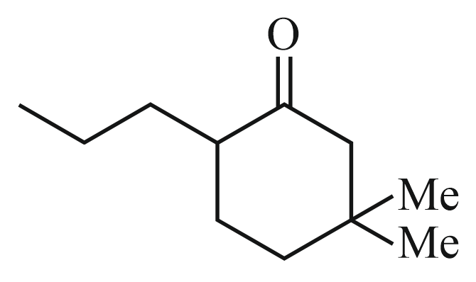

🧪 Haloalkanes & Haloarenes
52
Total Questions
5
Years
2
Clusters
Question Clusters
CHEM-HALOHALO-ELIMINATION_GRIGNARD
Haloalkanes & Haloarenes: Elimination Reactions (E1/E2) & Grignard Reagent
CHEM-HALOHALO-SN1_SN2_MECHANISMS
Haloalkanes & Haloarenes: Nucleophilic Substitution: SN1 vs SN2 Mechanisms
Year-wise Frequency
| Year | Questions | Frequency |
|---|---|---|
| 2021 | 12 | |
| 2022 | 8 | |
| 2023 | 17 | |
| 2024 | 10 | |
| 2025 | 5 |
Questions
Showing first 50 of 52 questions.
Q42 (2021 Shift 2)
In the given chemical reaction, colors of theFe2 + and Fe3 + ions, are respectively : 5Fe2 + - 8H+ →Mn2 + 5Fe3 + + MnO4 + + 4H2O +
CHEM-2021-0101-S2-Q042
Q40 (2021 Shift 2)
Which of the following reduction reaction CANNOT be carried out with coke?
CHEM-2021-0101-S2-Q040
Q45 (2021 Shift 2)
Ammonolysis of Alkyl halides followed by the treatment with NaOH solution can be used to prepare primary, secondary and tertiary amines. The purpose of NaOH in the reaction is.
CHEM-2021-0101-S2-Q045
Q33 (2021 Shift 1)
Which of the following compound CANNOT act as a Lewis base?
CHEM-2021-0101-S1-Q033
Q44 (2021 Shift 1)
Reaction of Grignard reagent, C2H5 MgBr with C8H8O followed by hydrolysis gives compound A , which reacts instantly with Lucas reagent to give compound B(C10H13 Cl). The Compound B is:
CHEM-2021-0101-S1-Q044
Q45 (2021 Shift 1)
Match List with List −I −II : List −I List −II (Chemicals) (Use / Preparation / Constituent)
CHEM-2021-0101-S1-Q045
Q57 (2021 Shift 1)
For the reaction 2 Fe3+(aq) + 2I−(aq) →2 Fe2+(aq) + I2( s) the magnitude of the standard molar free energy change, ΔrG∘ ______ (Round off to the Nearest m = − kJ Integer).
Answer:
45CHEM-2021-0101-S1-Q057
Q38 (2021 Shift 2)
The correct order of the following compounds showing increasing tendency towards nucleophilic substitution reaction is:
CHEM-2021-0101-S2-Q038
Q60 (2021 Shift 1)
Among the following, the number of halide(s) which is/ are inert to hydrolysis is (A) BF3 (B) SiCl4 (C) PCl5 (D) SF6
Answer:
1CHEM-2021-0101-S1-Q060
Q39 (2021 Shift 1)
In the leaching of alumina from bauxite, the ore expected to leach out in the process by reacting with NaOH is :
CHEM-2021-0101-S1-Q039
Q42 (2021 Shift 2)
The number of non-ionisable hydrogen atoms present in the final product obtained from the hydrolysis of PCl5 is :
CHEM-2021-0101-S2-Q042
Q43 (2021 Shift 2)
The major product of the following reaction, if it occurs by SN2 mechanism is :
CHEM-2021-0101-S2-Q043
Q47 (2022 Shift 2)
The conversion of propan- 1 -ol to n-butylamine involves the sequential addition of reagents. The correct sequential order of reagents is
CHEM-2022-0101-S2-Q047
Q31 (2022 Shift 1)
The pair, in which ions are isoelectronic with is
CHEM-2022-0101-S1-Q031
Q55 (2022 Shift 2)
A solution of Fe2SO43 is electrolyzed for 'x' min with a current of 1 . 5 A to deposit 0 . 3482 g of Fe. The value of x is - [nearest integer] Given : 1 F = 96500 Cmol-1. Atomic mass of Fe = 56 gmol-1
Answer:
20CHEM-2022-0101-S2-Q055
Q57 (2022 Shift 2)
PCl5 + H2O →A + HCl A + H2O →B + HCl Find number of ionisable hydrogen in B
Answer:
3CHEM-2022-0101-S2-Q057
Q54 (2022 Shift 1)
Metal deficiency defect is shown by Fe0.93 O . In the crystal, some Fe2+ cations are missing and loss of positive charge is compensated by the presence of Fe3+ ions. The percentage of Fe2+ ions in the Fe0.93 O crystals is____(Nearest integer)
Answer:
85CHEM-2022-0101-S1-Q054
Q40 (2022 Shift 1)
Given below are two statements : Statement I: The pentavalent oxide of group- 15 element, E2O5 , is less acidic than trivalent oxide, E2O3 , of the same element. Statement II : The acidic character of trivalent oxide of group elements, , decreases down the group. 15 E2O3 In light of the above statements, choose most appropriate answer from the options given below
CHEM-2022-0101-S1-Q040
Q45 (2022 Shift 1)
Which one of the following compounds is inactive towards reaction? SN1
CHEM-2022-0101-S1-Q045
Q58 (2022 Shift 1)
The number of terminal oxygen atoms present in the product B obtained from the following reaction is FeCr2 O4 + Na2 CO3 + O2 →A + Fe2 O3 + CO2 A + H+ →B + H2O + Na+
Answer:
6CHEM-2022-0101-S1-Q058
Q41 (2023 Shift 1)
A solution of FeCl3 when treated with K4Fe ( CN gives a prussian blue precipitate due to the formation of ) 6
CHEM-2023-0101-S1-Q041
Q37 (2023 Shift 2)
The equilibrium composition for the reaction PCl3 + Cl2 ⇌PCl5 at 298 K is given below: [PCl3]eq = 0. 2 mol L−1, [Cl2]eq = 0. 1 mol L−1, [PCl5]eq = 0. 40 mol L−1 If 0. 2 mol of Cl2 is added at the same temperature, the equilibrium concentrations of PCl5 is _____ ×10–2 mol L–1 Given: Kc for the reaction at 298 K is 20
CHEM-2023-0101-S2-Q037
Q55 (2023 Shift 1)
Choose the halogen which is most reactive towards SN1 reaction in the given compounds (A, B, C & D) A. B. C. D. (1) A −Br(b); B −I(a); C −Br(a); D −Br(a) (2) A −Br(b); B −I(b); C −Br(b); D −Br(b) (3) A −Br(a); B −I(a); C −Br(b); D −Br(a) (4) A −Br(a); B −I(a); C −Br(a); D −Br(a)

Answer:
1200CHEM-2023-0101-S1-Q055
Q56 (2023 Shift 2)
The correct order of reactivity of following haloarenes towards nucleophilic substitution with aqueous NaOH is: Choose the correct answer from the options given below: (1) A > B > D > C (2) C > A > D > B (3) D > C > B > A (4) D > B > A > C

Answer:
8CHEM-2023-0101-S2-Q056
Q46 (2023 Shift 1)
Identify the correct order of reactivity for the following pairs towards the respective mechanism
CHEM-2023-0101-S1-Q046
Q54 (2023 Shift 1)
FeO4 +2 . 2 V +0 . 70 V -0 . 45 V 2 - ⟶ Fe3 + ⟶ Fe2 + ⟶ Fe0 EFeO4 θ 2 - Fe2 + is x × 10-3 V. The value of x is _______ /
Answer:
1825CHEM-2023-0101-S1-Q054
Q58 (2023 Shift 1)
KClO3 + 6FeSO4 + 3H2SO4 → KCl + 3Fe2 ( SO4 ) + 3H2O 3 The above reaction was studied at 300 K by monitoring the concentration of FeSO4 in which initial concentration was 10 M and after half an hour became 8 . 8 M. The rate of production of Fe2 ( SO4 ) is – 6 – 1 – 1 3 _______ × l0 mol L s (Nearest integer) 3 -
Answer:
333CHEM-2023-0101-S1-Q058
Q54 (2023 Shift 2)
See the following chemical reaction: Cr2O7 2 - + XH+ + 6Fe2 + →YCr3 + + 6Fe3 + + ZH2O The sum of X, Y and Z is
Answer:
23CHEM-2023-0101-S2-Q054
Q42 (2023 Shift 1)
Which one of the following is not an example of calcination?
CHEM-2023-0101-S1-Q042
Q35 (2023 Shift 1)
Reaction of BeO with ammonia and hydrogen fluoride gives 'A' which on thermal decomposition gives BeF2 and NH4F. What is ? 'A'
CHEM-2023-0101-S1-Q035
Q41 (2023 Shift 1)
An ammoniacal metal salt solution gives a brilliant red precipitate on addition of dimethylglyoxime. The metal ion is :
CHEM-2023-0101-S1-Q041
Q44 (2023 Shift 1)
Consider the cell Pt(s)|H2( s)(latm)|H+(aq, [H+] = 1) Fe3+(aq), Fe2+(aq) ∣Pt (s) Given: EFe3+ Fe2+°= 0. 771 V and EH+/ 1 H2°= 0 V, T = 298 K / 2 If the potential of the cell is 0. 712 V the ratio of concentration of Fe2+ to Fe3+ is (Nearest integer)
Answer:
4CHEM-2023-0101-S1-Q044
Q47 (2023 Shift 1)
Reaction of thionyl chloride with white phosphorus forms a compound [A] , which on hydrolysis gives [B] , a dibasic acid. [A] and [B] are respectively
CHEM-2023-0101-S1-Q047
Q44 (2023 Shift 1)
Match List I with List II List I List II A I Fittig reaction B II Wurtz Fittig reaction C III Finkelstein reaction D C2H5Cl + NaI →C2H5I + Nacl IV Sandmeyer reaction
CHEM-2023-0101-S1-Q044
Q57 (2023 Shift 1)
Consider the cell PtsH2g, 1atmH+aq, 1M | Fe3 + aq, Fe2 + aq Pt s Fe2 + Fe3 + When the potential of the cell is 0 . 712 V at 298 K, the ratio / is (Nearest integer) Given: Fe3 + + e- = Fe2 + , E°Fe3 + , Fe2 + Pt = 0 . 771 2 . 303RT = 0 . 06 V F
Answer:
10CHEM-2023-0101-S1-Q057
Q56 (2023 Shift 2)
Decreasing order towards SN1 reaction for the following compounds is: (1) a > c > d > b (2) a > b > c > d (3) b > d > c > a (4) d > b > c > a
Answer:
275CHEM-2023-0101-S2-Q056
Q47 (2023 Shift 1)
Consider the following reaction ( i ) dil . NaOH Propanal + Methanal = → Product B (ii) Δ(iii) NaCN(iv) H3O+ ( C5H8O3 ) The correct statement for product 𝐵 is. It is
CHEM-2023-0101-S1-Q047
Q36 (2024 Shift 1)
The following reaction occurs in the Blast furnance where iron ore is reduced to iron metal Fe2O3( s) + 3CO(g) ⇌Fe(l) + 3CO2( g) Using the Le-chatelier's principle, predict which one of the following will not disturb the equilibrium.
CHEM-2024-0101-S1-Q036
Q43 (2024 Shift 1)
Iron (III) catalyses the reaction between iodide and persulphate ions, in which A. Fe3+ oxidises the iodide ion B. Fe3+ oxidises the persulphate ion C. Fe2+ reduces the iodide ion D. Fe2+ reduces the persulphate ion Choose the most appropriate answer from the options given below:
CHEM-2024-0101-S1-Q043
Q46 (2024 Shift 1)
Which among the following compounds will undergo fastest SN2 reaction.
CHEM-2024-0101-S1-Q046
Q46 (2024 Shift 2)
Given below are two statements : Statement (I) : SN2 reactions are 'stereospecific', indicating that they result in the formation of only one stereo-isomer as the product. Statement (II) : SN1 reactions generally result in formation of product as racemic mixtures. In the light of the above statements, choose the correct answer from the options given below :
CHEM-2024-0101-S2-Q046
Q48 (2024 Shift 1)
The correct statement regarding nucleophilic substitution reaction in a chiral alkyl halide is ;
CHEM-2024-0101-S1-Q048
Q45 (2024 Shift 2)
Which among the following halide/s will not show SN1 reaction:
CHEM-2024-0101-S2-Q045
Q54 (2024 Shift 2)
Total number of ions from the following with noble gas configuration is Sr2 + (Z = 38), Cs+ (Z = 55), La2 + (Z = 57)Pb2 + (Z = 82), Yb2 + (Z = 70) and Fe2 + (Z = 26)
Answer:
2CHEM-2024-0101-S2-Q054
Q48 (2024 Shift 1)
Given below are two statements : one is labelled as Assertion A and the other is labelled as Reason R : Assertion A : Aryl halides cannot be prepared by replacement of hydroxyl group of phenol by halogen atom. Reason R : Phenols react with halogen acids violently. In the light of the above statements, choose the most appropriate from the options given below:
CHEM-2024-0101-S1-Q048
Q43 (2024 Shift 2)
Alkyl halide is converted into alkyl isocyanide by reaction with
CHEM-2024-0101-S2-Q043
Q47 (2024 Shift 2)
Given below are two statements: Statement - I: High concentration of strong nucleophilic reagent with secondary alkyl halides which do not have bulky substituents will follow SN2 mechanism. Statement - II: A secondary alkyl halide when treated with a large excess of ethanol follows SN1 mechanism. In the the light of the above statements, choose the most appropriate from the questions given below:
CHEM-2024-0101-S2-Q047
Q59 (2025 Shift 1)
Given below are two statements : Statement I : will undergo reaction though it is a CH3 −O −CH2 −Cl SN1 primary halide. Statement II : will not undergo SN2 reaction very easily though it is a primary halide. In the light of the above statements, choose the most appropriate answer from the options given below : (1) Both Statement I and Statement II are incorrect (2) Both Statement I and Statement II are correct (3) Statement I is incorrect but Statement II is (4) Statement I is correct but Statement II is correct incorrect
Answer:
2CHEM-2025-0101-S1-Q059
Q43 (2025 Shift 1)
Consider a parallel plate capacitor of area A (of each plate) and separation 'd' between the plates. If E is the electric field and ε0 is the permittivity of free space between the plates, then potential energy stored in the capacitor is
CHEM-2025-0101-S1-Q043
Q48 (2025 Shift 1)
The temperature of 1 mole of an ideal monoatomic gas is increased by 50∘C at constant pressure. The total heat added and change in internal energy are E1 and E2 , respectively. If E1 = x then the value of x is _____ E2 9
CHEM-2025-0101-S1-Q048